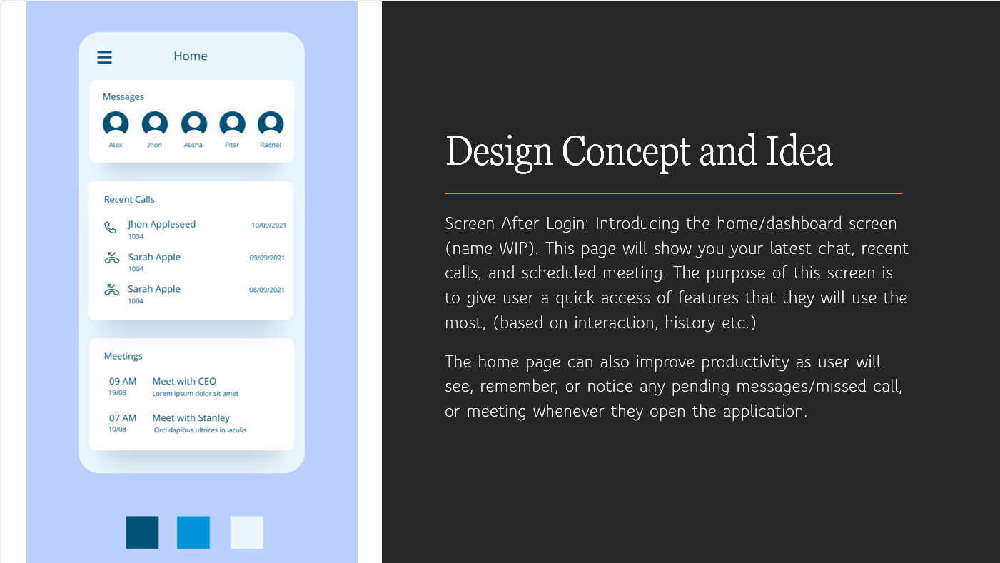
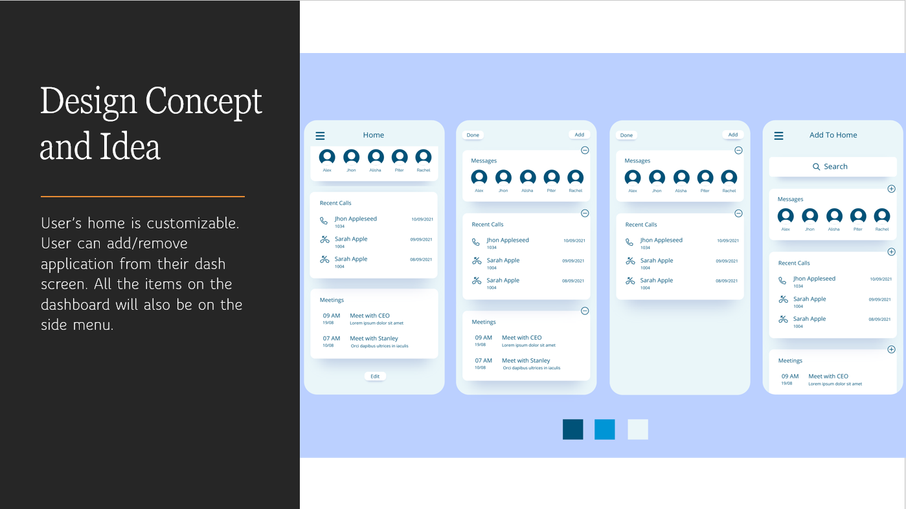
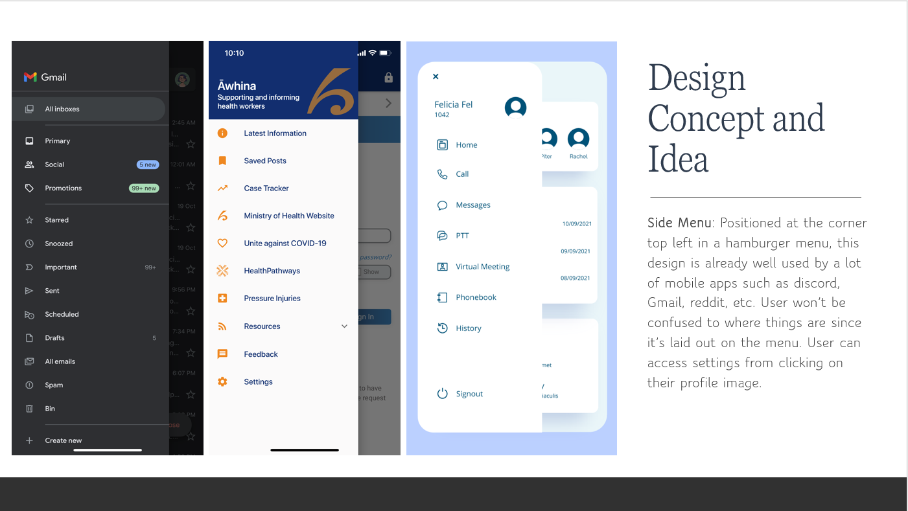
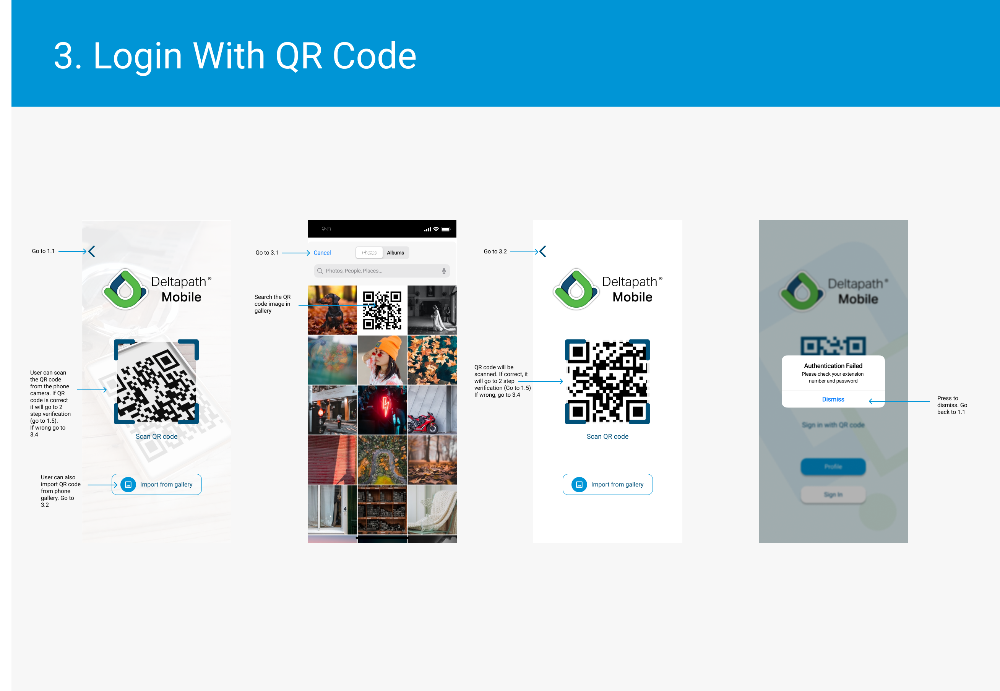
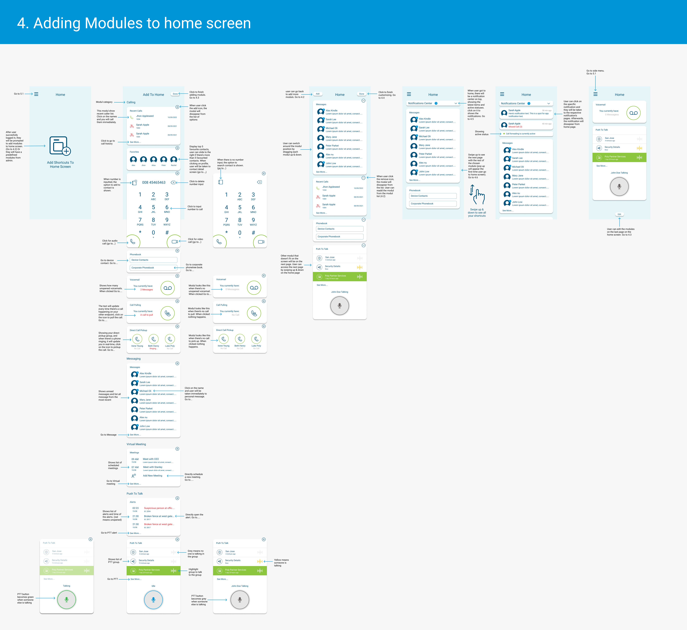

Deltapath Mobile UI & UX Design
Bckground: Deltapath Mobile is the next-generation mobility app serving your everyday
business
communication needs. Deltapath Mobile allows users to adapt to every situation anywhere and at any time
while maintaining high fidelity, great audio quality, access to instant messaging, impromptu conference
calls, and much more.
My role in this project was to do user experience research, formulate a plan to redesign the next
generation and prototype the UI of the mobile app. The company wants to update its current user
experience and interface from the outdated look of 2018.
Expertise
UX & UI Design
Year
2022


Techonogies:


Problem:
Other Apps:
-
Usually have 1 main feature, which will be the centre of the app
-
Fewer Features are offered, usually, other companies will opt on creating a separate app instead of combining all in one
-
All the features usually can be fitted on tabs on the bottom screen
Deltapath Mobile:
Lots of features
-
Each user has a different main feature that they use, and we must make the experience of using those features great
-
Need a way to categorize all the other features so it won’t be cramped & busy (learning from the mistake of the current version)
-
All the features can’t be fitted on tabs on the bottom screen
Proposed Solution:
Deltapath Mobile User’s needs vary between different job sectors, which is a plus point for usability and
selling, but also a pain point in designing the mobile app experience.
-
Once users first install the app, we let our users pick which features they want to be included in their home screen shortcuts. This way, we are making it as easy as possible for our user to achieve their core task within the app
-
The home page must be designed to be as simple as it could be, we don’t want to include any unnecessary information on the home screen as it will be information overload and increase user fatigue.
-
To access the other features user can go to the side menu. The reason to use the side menu is, we need to prioritize function over form. Although the bottom tab is popular on many apps on the market, it is only possible because they got simpler app capabilities and structure. In our case since Deltapath mobile is so packed with features, I think having a hamburger menu is beneficial for our UX.
-
When the user kills the app, it will restart back to the home screen when they launch the app again.
-
When users go out of the app (without killing it) it will stay on the last page/activity they were in.



Results:
The project is still in the development stage, the team are very excited about the new homepage layout and user experience. The proposed solutions are being tested and fleshed out. So far I've created the UX Flow of the login screen and homepage.

